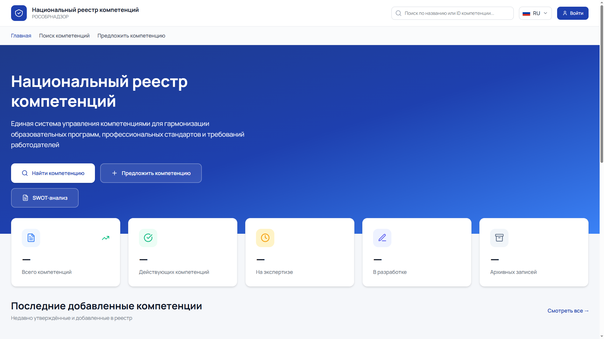
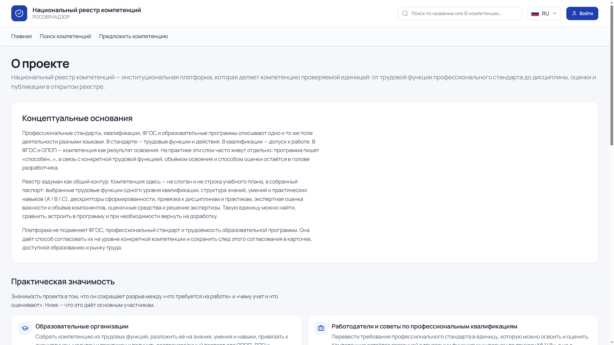
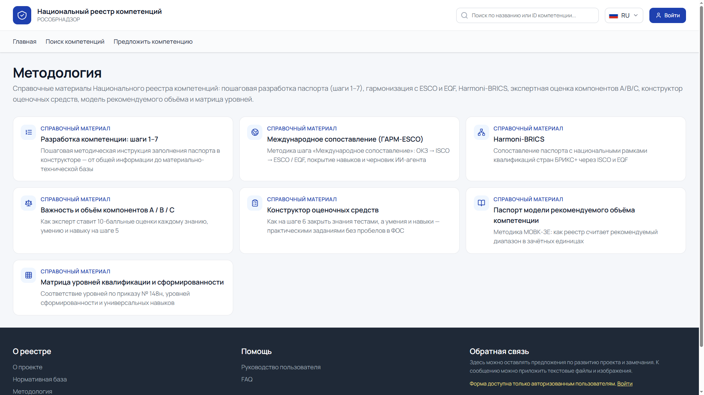
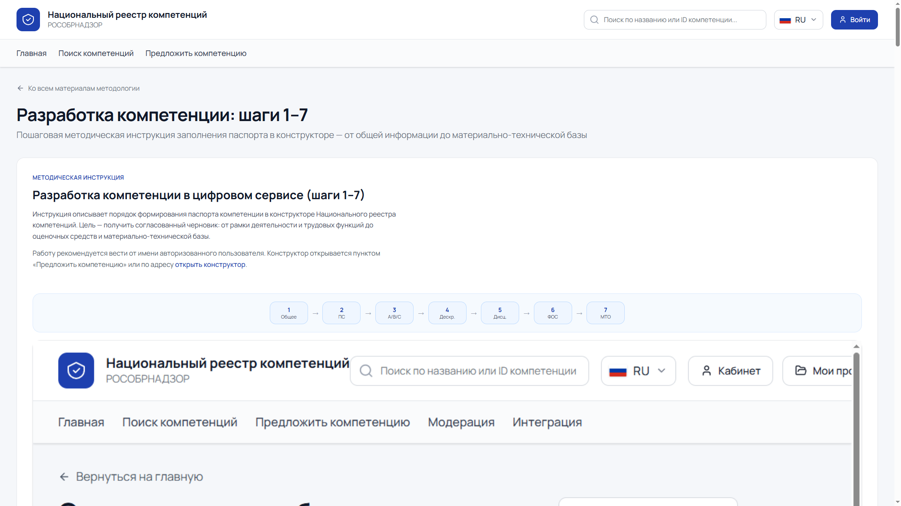
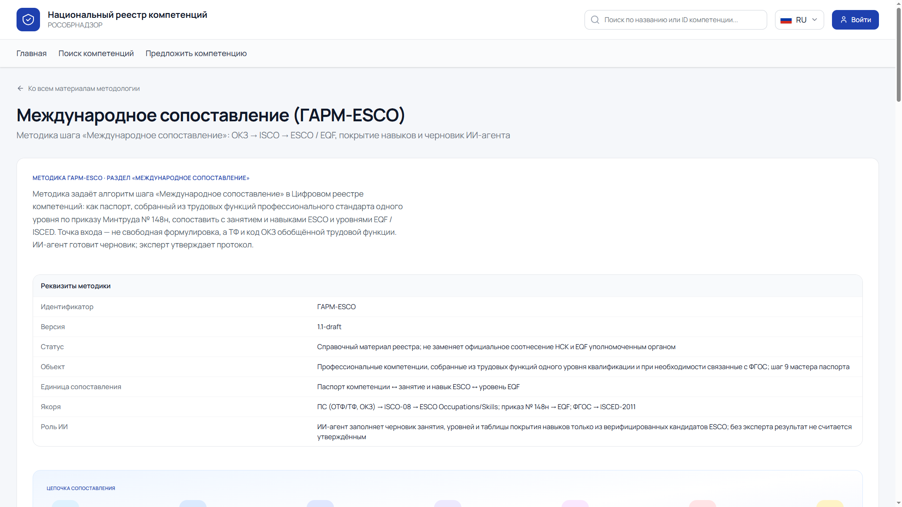
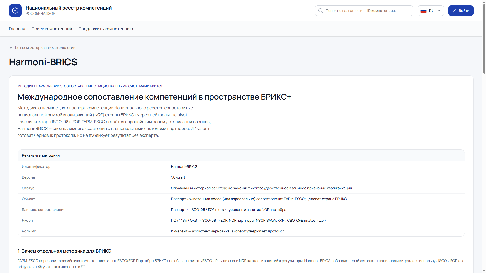
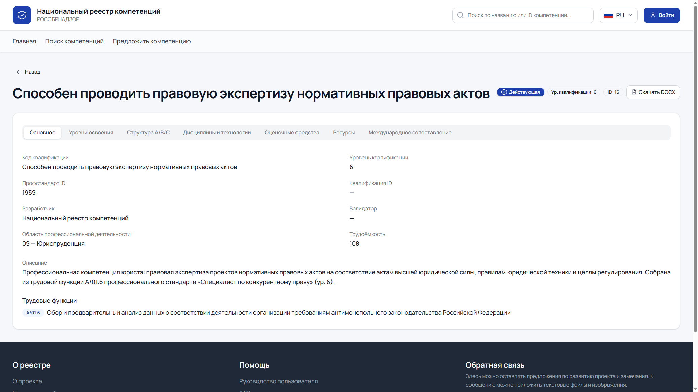

Национальный реестр компетенций
Компетенция собирается как проверяемый паспорт: от трудовой функции профессионального стандарта до дисциплины, оценки, экспертизы и открытой публикации.

Согласовать язык стандарта, квалификации и программы
Профессиональные стандарты, квалификации, ФГОС и образовательные программы описывают одно поле деятельности разными языками. Реестр собирает их в одну карточку компетенции.
Образование
Паспорт для ОПОП, ДПО и профобучения: трудовые функции, структура A/B/C, дисциплины и оценочные средства.
Работодатели и СПК
Требование стандарта переводится в единицу, которую можно освоить и оценить, с уровнем по приказу № 148н.
Эксперты
Одна процедура: дескрипторы, шкалы важности и объёма, фонд оценочных средств и чек-лист экспертизы.
Обучающиеся и НОК
Видно, из каких действий состоит компетенция, чем она подтверждается и к каким квалификациям относится.

В системе — вся база ПС, квалификаций и ФГОС и связи между ними
Конструктор подставляет трудовые функции, уровни и образовательные программы из этих справочников. Связи хранятся в реестре и используются при подборе на шаге паспорта.
Профессиональные стандарты
Полная база ПС: обобщённые трудовые функции, трудовые функции, трудовые действия, знания и умения. Компетенция опирается на ТФ одного уровня квалификации.
Квалификации
Полная база квалификаций и уровней по приказу Минтруда № 148н (шкала 1–9). Уровень паспорта фиксируется выбранными трудовыми функциями.
ФГОС
Полная база ФГОС. На шаге 1 паспорт привязывается к виду и уровню образования и к выбранному ФГОС либо к профессии рабочего / должности служащего.
Как компетенция проходит сервис

Семь шагов разработки компетенции
Черновик сохраняется на любом шаге. На экспертизу руководитель рабочей группы направляет заполненный паспорт после шага 7.
| Шаг | Содержание |
|---|---|
| 1 | Общая информация: название, описание, область, вид и уровень образования, ФГОС или профессия |
| 2 | Профстандарт и уровень квалификации по приказу № 148н, трудовые функции одного уровня |
| 3 | Структура A / B / C: знания, умения, практические навыки |
| 4 | Дескрипторы сформированности: базовый, продвинутый, экспертный |
| 5 | Привязка к дисциплинам, модулям и практикам; важность и объём по шкале 1–10 |
| 6 | Оценочные средства: тесты на знания и практические задания на умения и навыки |
| 7 | Материально-техническая база отдельно для знаний, умений и практических навыков |

От шапки паспорта к дескрипторам
1Общая информация
Название и описание компетенции, область профессиональной деятельности, вид и уровень образования, ФГОС либо профессия рабочего / должность служащего, организация-разработчик и ориентир по трудоёмкости.
2Профстандарт и уровень
Уровень 1–9 по приказу № 148н. Профессиональный стандарт подбирается по ОКСО ФГОС или по ОКПДТР. Трудовые функции — одного уровня; знания и умения распределяются по трудовым действиям. Несколько ПС допустимы при совпадении уровня.
3Структура A / B / C
A — знания, B — умения, C — практические навыки. Формулировки из выбранных трудовых функций дедуплицируются. Умение при необходимости переносится в практический навык.
4Дескрипторы
Матрица проявлений A/B/C на базовом, продвинутом и экспертном уровнях. Типовые формулировки подставляются из матрицы уровней. Для СПО и бакалавриата экспертный уровень не заполняется.
Для общепрофессиональных и универсальных компетенций связь с профессиональным стандартом может быть необязательной. Уровень по приказу № 148н остаётся рамкой паспорта.
Дисциплины, фонд оценочных средств и МТО
5Дисциплины
Каждый компонент A/B/C связывается с дисциплиной, модулем или практикой. Для привязки указываются форма контроля, важность и объём по шкале 1–10. Баллы — основание рекомендуемого объёма по методике МОВК-ЗЕ.
6Оценочные средства
На каждом уровне сформированности знания закрываются тестами: одно знание — один тест. Умения и навыки компонуются в практические задания по дереву ТФ → ТД → умение/навык. Компоновка завершается при полном охвате B и C.
7Материально-техническая база
Ресурсы описываются отдельно для знаний, умений и практических навыков: оборудование, программное обеспечение, помещения, материалы. В каждой части — хотя бы одна позиция, согласованная с оценочными средствами.
После шага 7
Руководитель рабочей группы нажимает «Направить на экспертизу». Статус становится «на экспертизе». Участник группы правит черновик, отправка доступна руководителю. Дальше — шаг 8, валидация.
Валидация перед статусом «действующая»
Пока идёт экспертиза, шаги международного сопоставления закрыты. Они открываются после утверждения.
1Направление
Руководитель подтверждает отправку. В карточке статус «на экспертизе». Конструктор показывает, что дальнейшие шаги откроются после утверждения.
2Назначение
Модератор или администратор назначает экспертов на карточке компетенции.
3Чек-лист
Эксперт проходит критерии валидации: по каждому пункту «Да» или «Нет» и при необходимости комментарий.
4Решение
Заявку утверждают, возвращают на доработку или отклоняют. Утверждённая компетенция в интерфейсе получает статус «действующая».
Международное сопоставление ГАРМ-ESCO
Паспорт переводится в язык занятий и навыков ESCO и уровня EQF. Якоря: профессиональный стандарт, ОКЗ и приказ № 148н.
- ОКЗ → ISCO-08. Занятие российского паспорта сопоставляется с международной классификацией занятий.
- ISCO-08 → ESCO. Подбираются занятия и навыки. Степени покрытия: полное, частичное, отсутствует, только национальная норма.
- 148н → EQF. Уровни 1–8 сопоставляются напрямую. Уровень 9 относится к EQF 8 как верхняя граница рамки.
- ФГОС → ISCED. Образовательный контур паспорта получает международный код.
ИИ-агент готовит черновик по верифицированным кандидатам ESCO. Утверждённый результат фиксирует эксперт. Публикация эквивалента создаёт сопоставимую основу и оформляется как версия методики.

Сопоставление с рамками БРИКС+
Harmoni-BRICS сопоставляет паспорт с национальной рамкой квалификаций страны-партнёра через ISCO-08 и EQF. ГАРМ-ESCO остаётся слоем детализации навыков.
Цепочка: паспорт РФ → ISCO-08 → EQF → NQF партнёра. Эксперт фиксирует тип связи и режим мобильности: уведомительный допуск, допуск с адаптацией, отказ / локальная аттестация.
Бразилия
CBO и каталоги MEC, мост через ISCO и ISCED.
Индия
NSQF (1–10), мост NSQF → EQF, занятия NCO/ISCO.
Китай
Национальные стандарты профессий; ISCO и ISCED как общая линейка.
ЮАР
SAQA NQF (1–10), referencing к EQF, OFO ↔ ISCO.
Индонезия
KKNI (1–9), мост через AQRF и EQF, KBJI/ISCO.
ОАЭ
QFEmirates, referencing к EQF, занятия через ISCO.

Шаг 9.2. Связка паспорта с международными системами
Шаги 9 и 9.1 остаются на месте. На шаге 9.2 к уже собранному паспорту применяется готовая версия мостов: EQF, ISCED и правила перевода структуры A/B/C в навыки ESCO, а также другие системы, включённые в выбранную версию.
Что выбирает эксперт
- Версию каталога мостов
- Системы сопоставления: ESCO, EQF, NST, NSQF и другие системы этой версии
- Глубину сопоставления и локальный кэш ESCO
Как готовится результат
- ИИ-агент формирует черновик по выбранным системам
- Эксперт подтверждает шаги протокола
- Готовая версия моста применяется к паспорту и сохраняется снимком
Граница результата
Сопоставление даёт общую линейку: занятие, навык, уровень рамки партнёра. Оно создаёт основу для сетевых программ и кадрового скрининга. Межгосударственное взаимное признание квалификаций оформляется отдельным актом.
Каталог версий мостов ведут администратор и международный методолог. Сопоставление выполняется по компетенции со статусом «действующая»; черновик ИИ подтверждает эксперт.
Карточка, поиск и документ DOCX
После утверждения компетенция видна в открытом поиске со статусом «действующая». Запись на экспертизе тоже видна в открытом контуре. Черновик остаётся у рабочей группы.
Что в карточке
Вкладки повторяют паспорт: основное, уровни освоения, структура A/B/C, дисциплины, оценочные средства, ресурсы и международное сопоставление. Кнопка «Скачать DOCX» выгружает документ. Без входа доступна публичная версия утверждённой записи.
Как найти
Поиск по названию, коду RUS-PK и числовому ID. Фильтры: область профессиональной деятельности, статус, уровень образования. Пример открытой карточки: компетенция со статусом «действующая» на https://drc.ao-nk.ru/competency/16.
